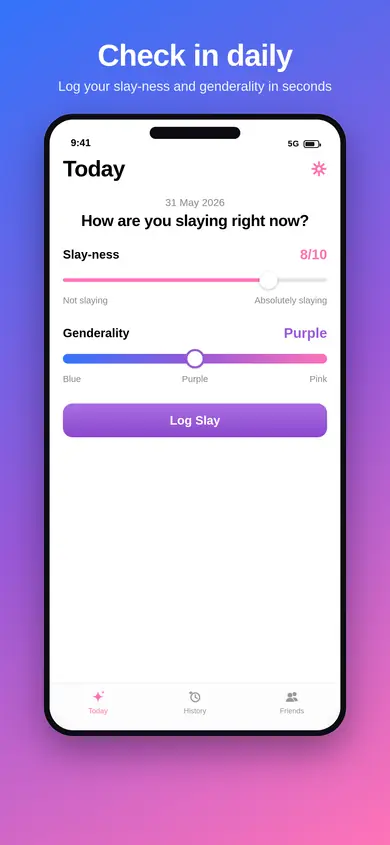
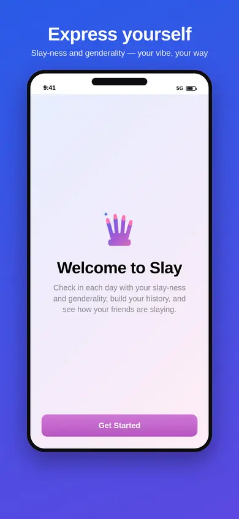
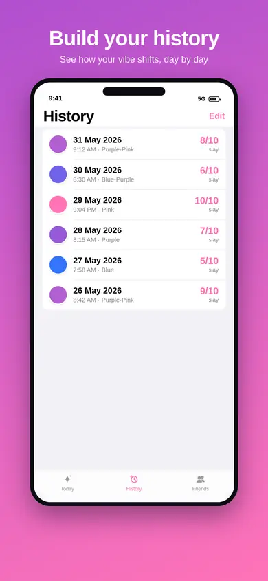
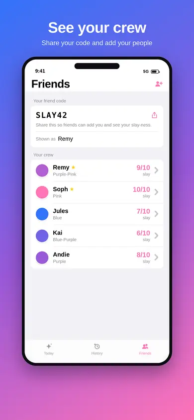
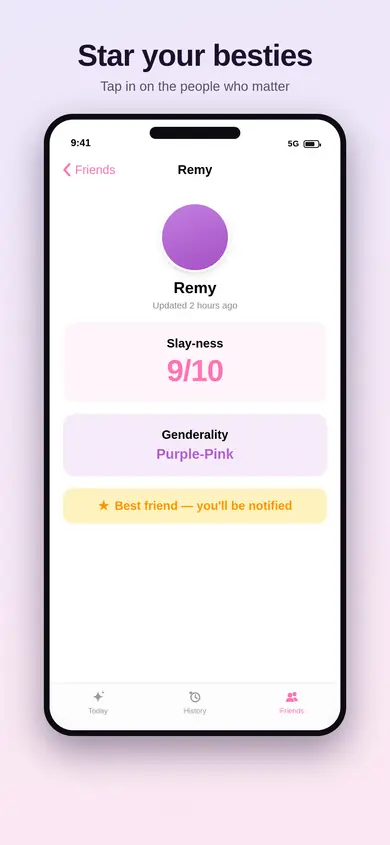
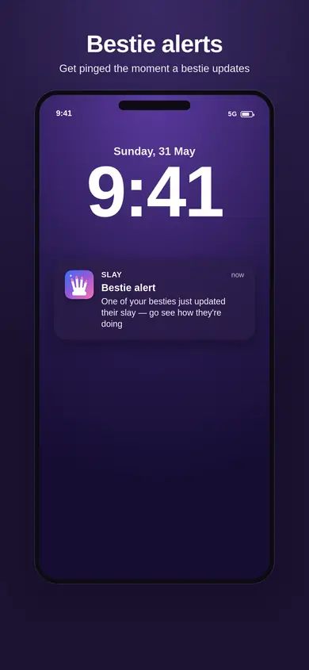
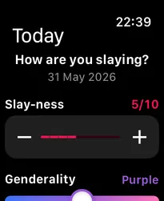
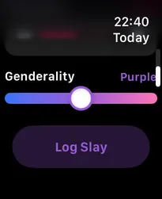
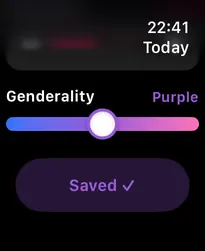
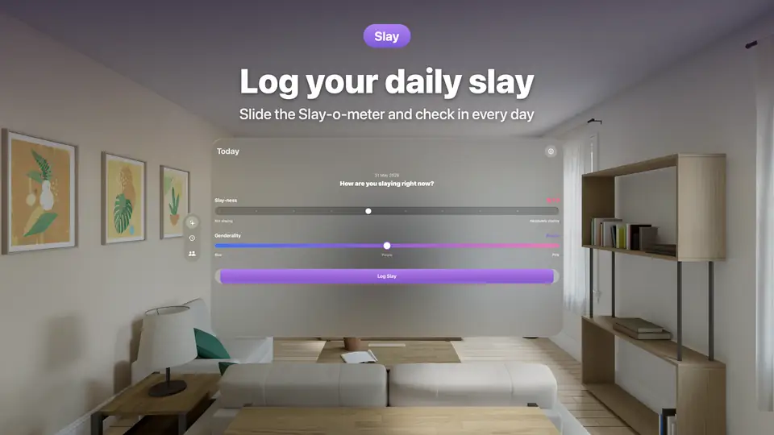

We build the app. You get it on the App Store.
XFour Labs builds native iOS apps and working prototypes for people who need something real in weeks, not a slide deck in months.
No charge, no obligation. Bring an idea or a half-finished project. You leave with a scope, a timeline and a price.
Most app ideas die in the gap between the idea and the thing you can hold
You have a product in your head. What you need is a version of it on a real phone — one you can open, show to a customer, hand to an investor, or put in front of your own team.
Getting there is where it usually stops.
A development agency quotes a six-figure programme and a four-month discovery phase before anyone writes code. A freelancer is cheaper and faster right up until they go quiet. A no-code builder gets you something that looks like an app but cannot do the things that make an app worth having — a home-screen widget, a Watch face, your data syncing silently across every device you own.
What you actually want is a small team that has already shipped something finished, that quotes a price before it starts, and that hands you a real app you own outright.
Three ways in
Start wherever matches your risk. Every package is fixed-price, agreed before any work begins. All prices exclude VAT.
Prototype Sprint
£1,600 + VAT
One week. You end it holding a working app on your own iPhone.
You get:
- A 45-minute call where we agree the single most important screen or flow in your app
- That flow built for real in native Swift and delivered over TestFlight, so you install it on your own iPhone and use it
- One round of changes to it
- A one-page written build scope for the full app, with a fixed price, valid 30 days
You do not get: an App Store release — this is a TestFlight build for you, not the public — more than one screen or flow, a server or an integration with your existing systems, or design work from a designer. The prototype uses standard Apple components.
How long: one week from the scoping call.
If you go ahead with a build within 30 days, £500 + VAT comes off the build price.
Full Build
£7,500 + VAT
Four weeks. Your app, on the App Store, under your own developer account.
You get:
- A native iPhone and iPad app written in Swift and SwiftUI. Not a web page in a wrapper
- Up to five screens, with the scope fixed in writing before a line of code is written
- Your data saved on the device and synced across the user's own iPhone, iPad and Mac through their iCloud — or connected to one API you already have. One or the other
- Notifications
- One home-screen widget
- An accessibility pass: Dynamic Type and VoiceOver labels, so the app works for people who need larger text or a screen reader
- An automated test suite, so changes later do not quietly break what already worked
- Submission to the App Store from your Apple Developer account, so you own the listing and the app from day one
- The full source code in your own Git repository, yours to keep and to take elsewhere
- Fourteen days of free bug fixes after Apple approves the app
You do not get: a server or back end built from scratch, an Android version, bespoke visual design from a designer, your Apple Developer Program membership (about £79 a year, paid by you to your own account), ongoing hosting or content, or a guaranteed Apple approval date — Apple reviews on their own schedule, and we handle the submission and any rejections but cannot control their clock.
How long: four weeks from scope sign-off.
Keep Shipping
£1,400 + VAT a month
For after launch. An app nobody maintains stops working within a year.
You get:
- Two days of development time each month, spent on whatever you have decided matters most
- Keeping the app working as Apple ships a new version of iOS each September
- Bug fixes, small changes and new features, up to the two days
- Re-submission to the App Store whenever something ships
- Rolling monthly, 30 days' notice on either side, no minimum term
You do not get: carry-over — unused days do not roll into next month — a 24/7 support desk, or a guaranteed response time. If you need those, say so and we will price them.
What this price assumes: we built the app, or we have had time to read the code we are taking on.
Here is one we finished
Slay is a native iOS app XFour designed, built and shipped to the App Store. You can download it right now. The full case study is below.

Case study: Slay
Slay: The Genderinator is a daily check-in app for iPhone, Apple Watch and Apple Vision Pro. A person logs how they are feeling on two scales — confidence, and where they sit on a gender-expression spectrum — and builds a private history of their own days. Designed, built and shipped to the App Store by XFour.
The brief
Build a private daily check-in app. Someone opens it once a day, records how they are feeling on two scales, and over time gets back a picture of their own patterns. It had to feel genuinely good to use rather than clinical, and it had to keep a person's entries private — their data stays on their own devices and in their own iCloud account, with no XFour server in the middle holding it.
It then had to be finished. Not a demo. On the App Store, with everything a real app needs: an icon, screenshots, a privacy policy, store metadata, accessibility, and a test plan proving it works.






Screens from Slay's App Store listing.
What we built
The app. A native iPhone app written in Swift and SwiftUI. Daily check-in, full history, charts that show how things have shifted over weeks and months, and a shareable summary a person can post if they want to.
On the wrist. A real Apple Watch app — not a mirror of the phone screen. You set your score with the Digital Crown and log it from the watch, and it appears on the phone a moment later. There is a watch-face complication showing your current score and streak, which opens the app when tapped.



The Apple Watch app.
On the Home Screen. Home-screen and lock-screen widgets showing the current score and streak, with a tap-to-log shortcut, refreshing the moment the underlying data changes.
In space. A dedicated Apple Vision Pro app, built as its own target so it can grow a genuinely spatial experience rather than being a stretched iPad app. It already has an immersive environment that shifts with the person's recent week.

Slay on Apple Vision Pro.
Syncing, properly. Entries move between a person's iPhone and their paired Watch automatically. The social side — the friends feature — syncs through Apple's own CloudKit under each person's Apple ID. Deletions stay deleted instead of reappearing, which is the hard part of sync and the part that is usually got wrong.
A social layer with the safety work done. Friends, friend codes, finding friends from your contacts without ever uploading your address book, reactions, and push notifications that fire the moment something happens. Messages between friends are cryptographically signed and sealed, so a notification cannot be forged.
Accessible. VoiceOver support, Reduce Motion honoured throughout, and every hidden interaction also reachable through a plain button so that someone using Switch Control or Voice Control is not locked out of it.
Tested and documented. Around 113 automated tests built with Apple's Swift Testing framework, split into a fast suite that runs on every build and a full suite that runs on every release, each driven by a one-command script. On top of that, a written manual test plan covering the multi-device flows no automated test can reach — two real users on two devices, the Watch, the Vision Pro headset, and the widgets.
Shipped. On the App Store, with the complete store package: app icon, six screenshots, store listing copy, keyword research, age rating, Apple's privacy disclosures filled in, and a published privacy policy.
What it demonstrates
| If you are asking… | Slay is the answer |
|---|---|
| Can you actually build native, or do you wrap a website? | Native Swift and SwiftUI throughout. Three separate app targets — iPhone, Apple Watch, Apple Vision Pro — out of one codebase. |
| Can you handle data syncing across devices? | Yes, including the hard case: deletions that stay deleted. Built on Apple's CloudKit, so there is no server to rent and no database for us to be a custodian of. |
| Can you build the Apple extras, or just the app itself? | Home-screen widgets, lock-screen widgets, a watch-face complication, push notifications, deep links, an immersive visionOS environment. |
| Do you take privacy and security seriously? | The design keeps personal entries on the user's own devices and in their own iCloud. Friend-to-friend messages are signed and sealed. The repository carries a written security policy. |
| Is it accessible? | VoiceOver, Reduce Motion and alternative routes to every gesture-only feature. This matters if you ever sell to a public body or a large company. |
| Do you test, or do you ship and hope? | ~113 automated tests on two cadences, plus a written manual plan for what automation cannot cover. |
| Can you get it through Apple review? | It is on the App Store. The store assets, the privacy disclosures and the policy were all produced as part of the work. |
| What do I own at the end? | Everything. Source code, assets, and the listing under your own developer account. |
Slay is XFour's own product, so we chose the brief. That is worth knowing — but the app, the sync, the Watch, the widgets, the tests and the App Store submission are the same work we would do for yours.
Tell us what you want built
Thirty minutes on a call. You describe what you need; we tell you which of the three packages fits, roughly what it costs, and roughly how long it takes. If it is not something we should build, we will say that too.
Or email hello@xfour.co.uk with a sentence about what you want to build.